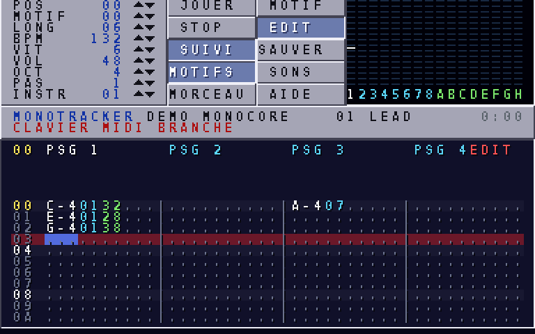
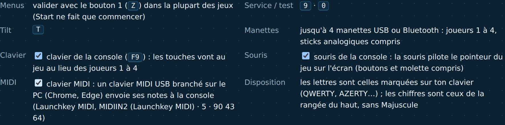

Depuis la version 4 de son matériel, la MONOCORE-1 a une entrée MIDI. Un clavier MIDI USB, comme un Novation Launchkey, peut ainsi jouer et écrire de la musique dans MONOTRACKER, et toute ROM peut lire ses notes. Ce guide explique comment le brancher, sur la MiSTer comme dans le simulateur, et quoi vérifier si rien ne se passe.
| Il vous faut | Détail |
|---|---|
| Le core MONOCORE en version 4 | releases/v4_midi_20261026c/MONOCORE_20261026c_midi.rbf ou plus récent, copié dans _Console |
| Un clavier MIDI USB | un clavier « class compliant », qui fonctionne sans pilote : c'est le cas de la plupart, dont les Launchkey |
| Une MiSTer à jour | avec MidiLink, le service MIDI de la MiSTer, installé par l'updater habituel ; rien à acheter |
| Une ROM qui lit le MIDI | MONOTRACKER à jour (monotracker.mnc), ou votre propre ROM (chapitre 4) |
Sur la MiSTer, le clavier se branche en USB sur la carte. Linux le reconnaît, MidiLink lit ses notes et les envoie au core par sa liaison série, à 31 250 bauds comme une prise MIDI classique. Le core les range dans le registre MIDI_IN. Dans le simulateur, c'est le navigateur qui lit le clavier (Web MIDI) et remplit ce même registre.
Brancher le clavier, régler le menu du core, vérifier.
MONOCORE_20261026c_midi.rbf, dans _Console sur la carte SD, et le monotracker.mnc à jour dans games/MONOCORE.| Choix | À quoi il sert | Pour un clavier ? |
|---|---|---|
| USB | échange les notes avec un appareil MIDI branché en USB sur la MiSTer | oui |
| Local | fait jouer la musique par un synthétiseur logiciel de la MiSTer (MUNT, FluidSynth) | non |
| UDP | envoie et reçoit le MIDI par le réseau, vers un autre ordinateur | non |
La MiSTer ne propose USB que si elle a reconnu un appareil MIDI. Si vous ne voyez que Local et UDP, elle ne voit pas encore le clavier : branchez-le sur la MiSTer (pas sur le PC), attendez quelques secondes et rouvrez le menu ; sinon, redémarrez la MiSTer avec le clavier déjà branché. Le chapitre 3 donne les vérifications suivantes.
Le réglage UART est gardé par la MiSTer pour le core MONOCORE : il n'y a pas à le refaire à chaque fois, tant que le clavier est branché.
Le même clavier, branché sur le PC.
dist/monocore.html).
Firefox ne donne pas le MIDI à une page ouverte directement depuis un fichier : la case affiche alors une explication dans la console de débogage. Ouvrez plutôt le simulateur par dist/simulateur.bat (Windows, double-clic) ou dist/simulateur.py : ils servent la page en local, à une adresse http://localhost:…, et l'ouvrent dans le navigateur. Firefox demande alors l'autorisation, et le clavier fonctionne. Il faut Python, déjà nécessaire pour construire les ROM.
Si le simulateur est publié en ligne (GitHub Pages), il suffit d'ouvrir son adresse : Chrome et Edge demandent l'autorisation, Firefox propose d'installer en un clic une petite extension de permission qu'il fabrique lui-même. Safari ne donne pas accès au MIDI.
Une fois cochée, la case clavier MIDI le reste d'une visite à l'autre dans le même navigateur : il suffit ensuite de brancher le clavier et d'allumer la console.
Trouver l'étape qui bloque.
| Ce que vous voyez | La cause probable | Que faire |
|---|---|---|
| pas de réglage UART Mode dans le menu | c'est un ancien core (version 3 ou moins), qui ne déclare pas d'UART | chargez MONOCORE_20261026c_midi.rbf ou plus récent |
| seulement Local et UDP, pas USB | la MiSTer ne voit pas le clavier | branchez-le sur la MiSTer, rouvrez le menu ; sinon redémarrez avec le clavier branché, puis vérifiez en SSH (ci-dessous) |
| USB choisi, mais le tracker ne réagit pas | une ancienne ROM, sans le MIDI | copiez le monotracker.mnc à jour dans games/MONOCORE |
Pour voir ce que Linux reconnaît, connectez-vous en SSH (root, mot de passe 1) : tapez ls /dev/midi* puis cat /proc/asound/cards : un clavier reconnu apparaît comme une carte son et un /dev/midi.
| Ce que vous voyez | La cause probable | Que faire |
|---|---|---|
| un message sur l'accès au MIDI dans la console de débogage | Safari, ou Firefox avec la page ouverte depuis un fichier | prenez Chrome ou Edge ; sous Firefox, lancez la page par simulateur.bat ou simulateur.py |
| pas de nom de clavier à côté de la case | le navigateur ne voit pas le clavier | débranchez-le, rebranchez-le, rechargez la page |
| le nom s'affiche, mais le compteur reste vide quand on joue | le clavier envoie sur un autre port, ou est dans un mode spécial (DAW) | remettez le clavier dans son mode normal |
| le compteur avance, mais le tracker ne réagit pas | la console est éteinte, ou la ROM est ancienne | cliquez sur Mettre sous tension ; prenez MONOTRACKER dans la liste des ROM intégrées |
Lire les notes d'un clavier avec le SDK mc.
Une ROM écrite avec le SDK bas niveau mc lit le clavier MIDI avec mc_midi_event(). La fonction rend le message complet suivant, ou −1 s'il n'y en a pas ; on l'appelle en boucle à chaque image. Elle gère le statut implicite (running status), donne une note jouée à vélocité nulle comme une note relâchée, et écarte l'horloge, le sysex et les autres messages système.
1#include "mc.h" 2 3int main(void) { 4 mc_init(); 5 for (;;) { 6 mc_frame(); 7 int e; 8 while ((e = mc_midi_event()) >= 0) { 9 int note = MIDI_DATA1(e), velocity = MIDI_DATA2(e); 10 switch (MIDI_STATUS(e)) { 11 case MIDI_NOTE_ON: /* note 60 = do du milieu, velocity 1-127 */ break; 12 case MIDI_NOTE_OFF: /* touche relâchée */ break; 13 case MIDI_CC: /* potentiomètre : note = numéro, velocity = valeur 0-127 */ break; 14 } 15 } 16 } 17}
| Élément | Rôle |
|---|---|
mc_midi_event() | message suivant : statut, puis deux octets de données ; −1 s'il n'y a rien |
MIDI_STATUS(e) | MIDI_NOTE_ON, MIDI_NOTE_OFF, MIDI_CC, MIDI_PITCH, MIDI_PROGRAM… |
MIDI_CHANNEL(e) | canal MIDI, de 0 à 15 |
MIDI_DATA1(e) / MIDI_DATA2(e) | note ou numéro de contrôleur / vélocité ou valeur |
MIDI_IN | le registre (0x4000_00DC), une file de 64 octets ; il existe si mc_hw_version() vaut 4 ou plus (SPEC.md) |
Exemples complets : les jeux CASCADE, PIANO DEFENDER et SOLFEGE (examples/). Pour tester sans clavier, tools/run.js accepte des octets MIDI en hexadécimal, par exemple 60:mi=90,3C,64 pour jouer le do du milieu à l'image 60. Le module mtrack permet ensuite de jouer ces notes avec les instruments d'un morceau de MONOTRACKER, comme le fait le tracker.